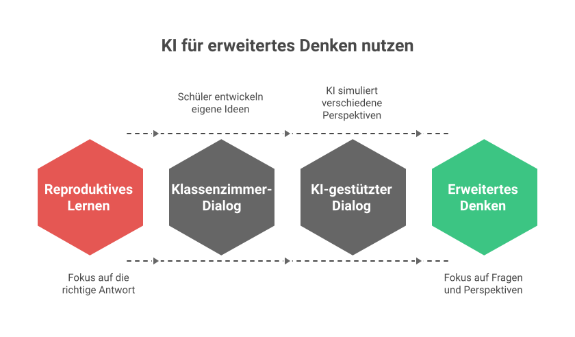
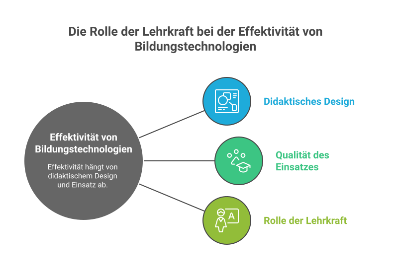
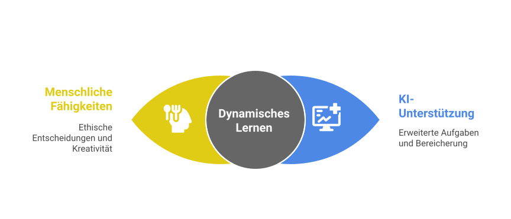

KI als didaktische Rolle
KI lässt sich in fünf typischen Rollen denken - das hilft bei der bewussten Wahl:
- Tutor:in erklärt, fragt, gibt Hinweise.
- Sparringspartner:in hinterfragt eigene Argumente.
- Generator:in erzeugt Material, Beispiele, Aufgaben.
- Diagnostiker:in wertet Schreib-/Fehlerproben aus.
- Co-Autor:in begleitet Schreib- und Gestaltungsprozesse.
SAMR-Modell auf KI angewendet
Das SAMR-Modell (Puentedura) lässt sich gut auf KI-Einsatz übertragen:
S - Substitution
KI ersetzt ein klassisches Werkzeug 1:1 (z.B. Text statt Lückentext erzeugen lassen).
A - Augmentation
KI verbessert eine bestehende Methode (z.B. Differenzierung in Sekunden).
M - Modification
Aufgabe wird erst durch KI möglich (z.B. individuelles Feedback in Echtzeit).
R - Redefinition
Völlig neue Aufgabenformate (z.B. KI-Sparring zur eigenen Argumentation).
Bewertung mit und ohne KI
Wenn KI im Schreibprozess eine Rolle spielt, verschiebt sich die Bewertung. Drei Ansätze:
- Prozessbewertung: Stationen des KI-Einsatzes werden dokumentiert (vgl. Raster 02 „KI-Prozess dokumentieren").
- Vergleichsbewertung: Mit-/Ohne-KI-Versionen werden gegenübergestellt (Raster 06).
- Mündliche Verteidigung: Schüler:innen erklären Entscheidungen.
Bewertungsraster (Falck) - Übersicht
Im Materialordner liegen 11 Raster für Lehrkräfte und Schüler:innen:
- Prompt-Qualität
- KI-Prozess dokumentieren
- KI-Ergebnis analysieren
- KI-Ergebnis bewerten
- KI-Ergebnis überarbeiten
- Mit-/Ohne-KI-Vergleich
- Metakognitive Reflexion
- Urteilsvermögen / KI-Sinnhaftigkeit
- Ethische KI-Nutzung
- KI im Lernprozess (Portfolio)
- KI-Einsatz planen
Methodische Bausteine
- Prompt-Slam: Schüler:innen feilen kollaborativ am besten Prompt zu einer Aufgabe.
- Halluzinations-Hunt: Klasse sucht in einer KI-Antwort nach falschen Behauptungen.
- KI-Tribunal: Pro-/Contra-/Reflexionsgruppe debattieren KI-Einsatz im Fach.
- Reverse Prompting: Schüler:innen rekonstruieren aus einer Antwort den passenden Prompt.
- Persona-Switching: Gleicher Inhalt aus drei KI-Personas - Vergleich.
KI-Review der empirischen Bildungsforschung - vier Leitprinzipien
Der vom BMBFSFJ veröffentlichte KI-Review zur empirischen Bildungsforschung bündelt den Stand der Wirkungsforschung zu KI in Lehr-Lern-Prozessen. Aus didaktischer Sicht besonders relevant ist der zentrale Reflexionsrahmen: Wer KI im Unterricht einsetzt, sollte sich vier Fragen stellen - die vier Leitprinzipien für den Umgang mit KI-Entscheidungen und -Ergebnissen:
![Schaubild: Wie man KI-Entscheidungen und -Ergebnisse angeht? Vier Leitprinzipien in einer blütenförmigen Anordnung. 1) Verantwortlichkeit (rot, Spielfigur-Symbol): Verantwortlichkeit für fehlerhafte KI-Vorhersagen festlegen. 2) Interpretierbarkeit (gelb, Glühbirne): KI-Erklärungen für die Nutzenden verständlich machen. 3) Fairness (grün, Waage): Verzerrungen im KI-System minimieren, um gerechte Ergebnisse zu gewährleisten. 4) Erklärbarkeit (blau, Lupe): Sicherstellen, dass KI-Entscheidungen transparent und verständlich sind.](../assets/ki-vier-leitprinzipien.svg)
Die vier Dimensionen im didaktischen Kontext
🎯 Verantwortlichkeit (Accountability)
Wer haftet, wenn die KI falsch liegt? Im Schulkontext heißt das: Die pädagogische Verantwortung bleibt bei der Lehrkraft. Eine KI-generierte Diagnose, Notenempfehlung oder Stoffauswahl kann den Lehrenden nicht aus der Pflicht nehmen - im Gegenteil: Wer KI einsetzt, muss Ergebnisse aktiv prüfen und im Zweifel widersprechen.
💡 Interpretierbarkeit (Interpretability)
Sind die KI-Erklärungen für die Nutzenden verständlich? Wenn Schüler:innen mit KI arbeiten, müssen sie verstehen, wie die Antwort zustande kam - nicht nur, was sie sagt. Lehrkräfte sollten Tools wählen, die Quellen offenlegen, Unsicherheiten benennen und Wege zum Nachvollziehen bieten.
⚖️ Fairness
Werden Verzerrungen im System minimiert? KI-Modelle reproduzieren Vorurteile aus ihren Trainingsdaten. Im Bildungskontext kann das mehrsprachige, geschlechtsspezifische oder kulturelle Schlagseiten verstärken. Lehrkräfte müssen Outputs auf solche Muster prüfen und gezielt gegensteuern - z.B. durch bewusst geschlechtsneutrale Prompts oder Mehrperspektivität.
🔍 Erklärbarkeit (Explainability)
Sind die KI-Entscheidungen transparent? Erklärbarkeit geht über Interpretierbarkeit hinaus: Es geht nicht nur darum, dass eine Erklärung existiert, sondern darum, dass sie systematisch zugänglich ist - auch für Eltern, Schulleitung und Schüler:innen, die nach dem „Warum" fragen.
Vom Prinzip zur Praxis - vier Checkfragen vor jedem KI-Einsatz
- Verantwortlichkeit: Bin ich bereit, das KI-Ergebnis mit meinem Namen zu unterschreiben? Wenn nein - was muss ich vorher ändern?
- Interpretierbarkeit: Können meine Schüler:innen nachvollziehen, was die KI gemacht hat und warum? Wenn nein - reiche ich Erklärungen nach oder wähle ein anderes Tool.
- Fairness: Welche Gruppen könnten durch die KI-Antwort benachteiligt werden (Sprache, Geschlecht, Kultur, Lernstand)? Wo prüfe ich gegen?
- Erklärbarkeit: Wenn morgen Eltern oder Schulleitung fragen, warum diese KI-Entscheidung getroffen wurde - kann ich es ihnen erklären?
Vier Leitfragen aus dem Review - visuell aufbereitet
Vier weitere Schaubilder aus dem Review nehmen jeweils eine zentrale Forschungsfrage auf und destillieren die Befunde in eine prägnante Visualisierung. Sie eignen sich hervorragend für Fortbildungen, Konferenzen und Steuergruppen-Sitzungen.

Kernbotschaft: KI verändert nicht nur Werkzeuge, sondern die Art des Unterrichts selbst. Wo früher die richtige Antwort im Mittelpunkt stand, geht es zunehmend um gute Fragen, perspektivische Vielfalt und eigene Ideen. Forscher:innen fordern daher eine grundsätzlich andere didaktische Haltung.

Kernbotschaft: KI ist nicht für alle gleich wirksam. Vorwissen, Medienkompetenz, Bildungsniveau, Lernumgebung und Fachbezug bestimmen mit, ob KI tatsächlich entlastet oder eher überfordert. Die Frage „funktioniert KI?" ist immer nur die halbe Wahrheit - sie muss lauten: „Für wen, in welchem Kontext, in welchem Fach?"

Kernbotschaft: Die Forschung zur Lernwirksamkeit von Bildungstechnologien ist eindeutig: Nicht das Tool entscheidet, sondern das didaktische Design und vor allem die Lehrkraft, die es einsetzt. KI ist ein Werkzeug - die pädagogische Inszenierung bleibt menschliche Kunst. Wer auf „KI macht den Unterricht besser" hofft, ohne Lehrkräfte fortzubilden, wird Enttäuschung ernten.

Kernbotschaft: Die Schlagzeile „KI macht Faktenwissen überflüssig" greift zu kurz. Das Review macht deutlich: Faktenwissen bleibt notwendig, damit menschliche Fähigkeiten (ethische Entscheidungen, Kreativität) mit KI-Unterstützung (erweiterte Aufgaben, Bereicherung) zu einem dynamischen Lernen verschmelzen können. Ohne Wissensbasis kann KI nicht sinnvoll bewertet, eingeordnet oder ergänzt werden. Lernziele werden also nicht weniger anspruchsvoll - sie verschieben sich.
Lernideen mit KI
💡 Workshop 09 - Lernideen
Konkrete didaktische Bausteine für die Praxis.
🧩 Differenzierte Wochenplan-Werkstatt
🎯 Aufgaben „KI-fest" machen
Du gibst der KI eine bestehende Aufgabe und prüfst, ob sie sie zu leicht löst. Daraus entstehen anspruchsvollere Versionen.
🧪 Mit-/Ohne-KI-Studie im Kurs
🔁 Reverse-Prompt-Detektivinnen und -Detektive
Du erhältst eine KI-Antwort und versuchst, den passenden Prompt zu rekonstruieren.
📐 Eigenes Bewertungsraster bauen
Ressourcen
- 📑
- 📦
- 📄
- 🏛
- 📚